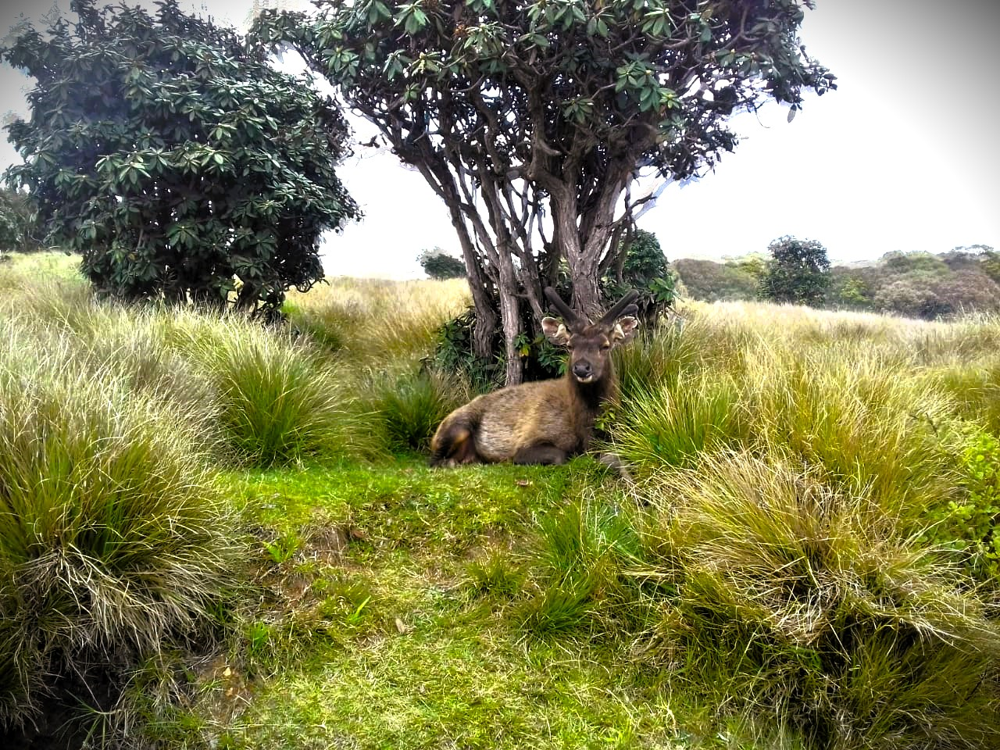

Image credit: [Everything Lanka]
Horton Plains is one of the most exotic national parks found in Sri Lanka, filled with rare organisms and breath taking
scenery.
Top Attractions
- Exotic animals and plants.(Sri Lankan Moose, Sakes, Jungle Cat)
- Cool and chilli atmosphere filled with mist.
- Adventure filled hiking path with stunning scenery.
- Gorgeous flowers and plants.
How to Get There
- Located in the **Nuwara Eliya District**, Sri Lanka, within the Central Highlands.
- Take the **train to Ohiya Station**, one of the highest and most scenic railway stations in the country.
- From Ohiya, it's a **short tuk-tuk or vehicle ride** (about 8 km) to the park entrance.
- Alternatively, travel by **private vehicle or taxi** from Nuwara Eliya town (approx. 32 km).
Best Time to Visit
Visit Horton Plains**between July and December** for minimum foot traffic and amazing weather.
Interesting Facts
- Horton Plains is a protected plateau situated at over 2,000 meters above sea level in Sri Lanka’s central highlands.
- It is the source of three major rivers: Mahaweli, Kelani, and Walawe.
- The park is famous for World’s End, a sheer cliff with a drop of nearly 870 meters.
- Wildlife includes rare and endemic species such as the Sri Lankan sambar deer and the Horton Plains slender loris.
- The cloud forests and grasslands create a unique ecosystem, often blanketed in mist.
With its **hiking trails, cultural sites, and relaxing atmosphere**, Horton Plains is a must-visit for nature lovers and adventure seekers alike.